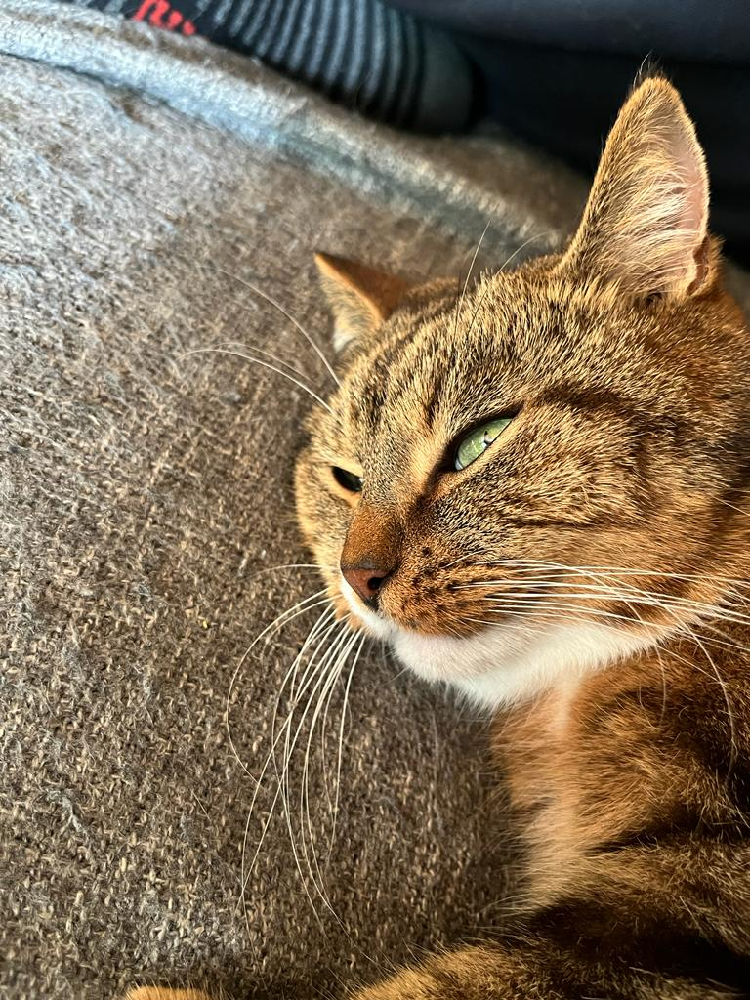

Cat
Seria então dizer que...
Os gatos nos protegem contra os mortos,
Os cachorros nos protegem contra os vivos, (risos).
The cat (Felis catus) is a domestic species of small carnivorous mammal. It is the only domesticated species in the family Felidae[1] and is commonly referred to as the domestic cat or house cat to distinguish it from the wild members of the family. Cats are commonly kept as house pets but can also be farm cats or feral cats; the feral cat ranges freely and avoids human contact. Domestic cats are valued by humans for companionship and their ability to kill vermin. About 60 cat breeds are recognized by various cat registries.
The cat is similar in anatomy to the other felid species: it has a strong flexible body, quick reflexes, sharp teeth, and retractable claws adapted to killing small prey like mice and rats. Its night vision and sense of smell are well developed. Cat communication includes vocalizations like meowing, purring, trilling, hissing, growling, and grunting as well as cat-specific body language. Although the cat is a social species, it is a solitary hunter. As a predator, it is crepuscular, i.e. most active at dawn and dusk. It can hear sounds too faint or too high in frequency for human ears, such as those made by mice and other small mammals.[7] It also secretes and perceives pheromones.[8]
Etymology and naming
The origin of the English word cat, Old English catt, is thought to be the Late Latin word cattus, which was first used at the beginning of the 6th century.[20] It was suggested that cattus is derived from an Egyptian precursor of Coptic ϣⲁⲩ šau, 'tomcat', or its feminine form suffixed with -t.[21] The Late Latin word may be derived from another Afro-Asiatic[22] or Nilo-Saharan language. The Nubian word kaddîska 'wildcat' and Nobiin kadīs are possible sources or cognates.[23] The Nubian word may be a loan from Arabic قَط qaṭṭ ~ قِطّ qiṭṭ.
Characteristics
Size
The domestic cat has a smaller skull and shorter bones than the European wildcat.[59] It averages about 46 cm (18 in) in head-to-body length and 23–25 cm (9–10 in) in height, with about 30 cm (12 in) long tails. Males are larger than females.[60] Adult domestic cats typically weigh between 4 and 5 kg (9 and 11 lb).[43]Skeleton ☠
Cats have seven cervical vertebrae (as do most mammals); 13 thoracic vertebrae (humans have 12); seven lumbar vertebrae (humans have five); three sacral vertebrae (as do most mammals, but humans have five); and a variable number of caudal vertebrae in the tail (humans have only three to five vestigial caudal vertebrae, fused into an internal coccyx).[61]: 11 The extra lumbar and thoracic vertebrae account for the cat's spinal mobility and flexibility. Attached to the spine are 13 ribs, the shoulder, and the pelvis.[61]:16 Unlike human arms, cat forelimbs are attached to the shoulder by free-floating clavicle bones which allow them to pass their body through any space into which they can fit their head.[62]Breeds
- Long hair
- Highlander
- White
- Black
- Abyssinian
- Short Hair
- Highlander
- Abyssinian
- Ragdoll
- American Bobtail
| Breed | Origin | Size | |
|---|---|---|---|
| Country | | Situation | ||
| Asian | UK | Natural | Moderate |
| Bambino | US | Natural | Dwarf |
| Maine Coon | US | Natural | Large |